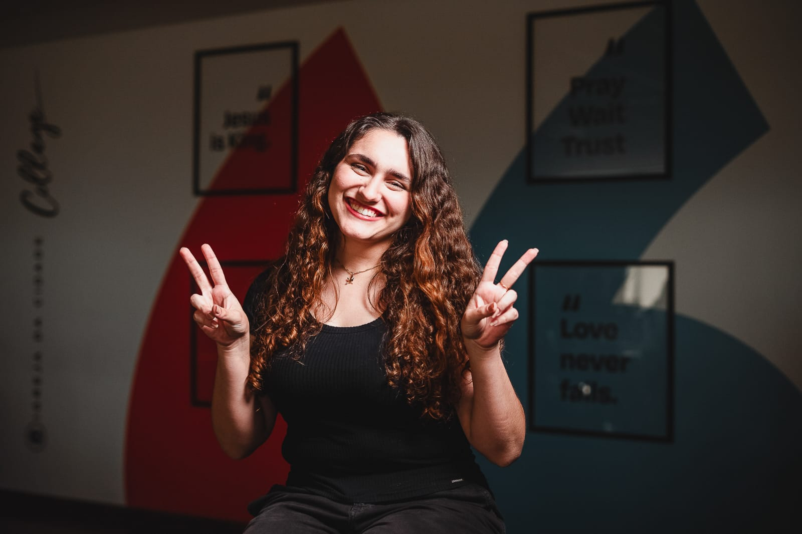

Olá, eu sou Marina Duque Cavalcanti
Desenvolvedora em formação focada em Desenvolvimento Web, Design Digital e Inteligência Artificial

Sobre Mim
Marina Duque de Holanda Cavalcanti
Formação Atual: Cursando Desenvolvimento de Software Multiplataforma - FATEC
Objetivo Acadêmico e Profissional: Atuar como desenvolvedora digital
Áreas de Interesse: Desenvolvimento Web, Design Digital, Inteligência Artificial

Currículo
Formação
Medalhas
Certificados
Projetos
API - Radar Cidadão - Trabalho em Equipe
Problema e Objetivo: Facilitar o acesso e a compreensão, pela maior parte da sociedade, dos dados públicos complexos sobre deputados candidatos à reeleição.
Solução: Criação de um site que simplifica dados complexos, tornando-os claros e úteis para a população entender e comparar candidatos.
Tecnologias: Python, HTML, CSS, Colab, Jira, Bootstrap
Metodologia: SCRUM
Desafios Técnicos: A fonte utilizada não fornecia boa parte dos dados que precisávamos de forma direta, foi preciso buscar outra alternativa
Resultados: O projeto ainda está em desenvolvimento, mas já foi possível transformar dados em informações úteis
Minha participação:Atuei como Scrum Master, organizando e distribuindo as tarefas da equipe por meio do Jira.
Ver ProjetoUniversidade Fictícia
Problema: Atividade criada pelo profesor de Desenvolvimento Web e Design Digital para treinar o que foi ensinado em aula
Objetivo: Criar um site responsivo que utilize HTML, CSS e BOOTSTRAP com interface fluida, organizada e limpa
Solução: Foi criada uma Universidade fictícia chamada Studio KeyFrame e feito um site com 3 páginas interligadas (Home, Sobre e Contato)
Tecnologias: HTML, CSS, Bootstrap
Metodologia: Rápida
Desafios Técnicos: Utilizar o projeto não somente para fixar o conteúdo já ministrado, mas também para ir mais a fundo
Resultados: Site com interface moderna, tecnólogica, com identidade visual condizente ao que a faculdade se propõe à ser
Ver ProjetoPrototipação
Problema: Atividade criada pelo profesor de Design Digital para treinar o que foi ensinado em aula sobre Wireframe, Mockup e Protótipo
Objetivo: Criar um Wireframe, um Mockup e um Protótipo de um site fictício
Solução: Foi criada uma loja de roupas onlinefictícia chamada Lumière e feito todo o processo com 4 páginas principais
Tecnologias: Figma
Metodologia: Prototipagem
Desafios Técnicos: Aprender a usar a ferramenta do figma e, ao mesmo tempo, as diferenças práticas entre as 3 "subfases" da prototipagem
Resultados: Protótipo navegável com identidade visual e fácil idealização de como deve ser feito o projeto final
Ver ProjetoHabilidades
Técnicas
- Linguagens: [Python], SQL, HTML, CSS
- Frameworks: Flask
- Banco de Dados: MySQL
- Ferramentas: Git, Jira, Colab
Comportamentais
- Liderança
- Trabalho em equipe
- Organização
- Resolução de Problemas
Eventos
- XXV Maratona Interna de Programação FATEC